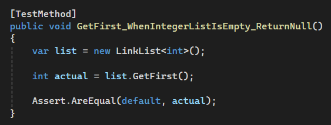

Experience
Projects I've worked on

In our coursework we already were introduced to unit tests. Unit testing is a software testing technique where individual components or functions of a program are tested in isolation to ensure they work as intended.
As a student studying computer science, I recognize the importance of mastering various data structures, particularly stacks, queues, and deques. These structures are integral to developing efficient algorithms and solving complex problems in programming.

As a student, I recently learned about benchmarking in my coursework, and I found it to be a fascinating and valuable concept, especially in the context of both business and software development.